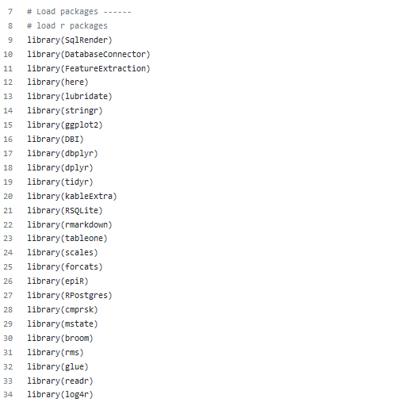
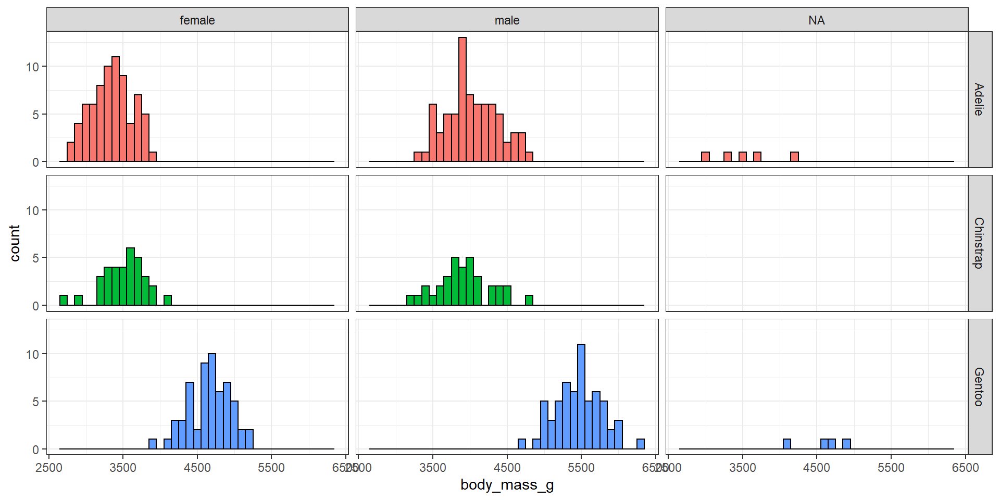

Getting started with R
Ed Burn
Outline
- Basics
- Data manipulation
- Visualising data
- Summarising data
- Iteration and functions
- Organising projects
Basics
R and RStudio

Packages
Packages are collections of R functions, data, and compiled code in a structured format. The directories in R where the packages are stored are called the libraries.
There are a set of standard (base) packages which are considered part of the R source code and automatically available as part of your R installation. Base packages contain the basic functions that allow R to work.
In addition, there are 10,000+ user contributed packages.
CRAN is a repository where the latest downloads of R (and legacy versions) are found along with user contributed R packages. Packages can also be downloaded from GitHub or elsewhere.
Installing packages
From CRAN
Using packages
Typically for analysis scripts, I would load all the libraries I use at the top of the script.

Creating objects in R
To do useful things in R we need to assign values to objects. To create an object, we need to give it a name followed by the assignment operator <-, and the value we want to give it.
Vectors and data types
There are four primary types of (atomic) vectors in R: logical, integer, double, and character (which contains strings)
Vectors and data types
Factors and dates

Factors
chr [1:4] "Dec" "Apr" "Jan" "Mar"[1] "Apr" "Dec" "Jan" "Mar"Dates
Working with vectors
We can assign a series of values to a vector using the c() function
Aggregating functions
Subsetting vectors
Data frames
A data frame is a list of equal-length vectors

Tibbles
Tibbles are data frames, but they tweak some older behaviours to make life a little easier.
Compared to a data frame, a tibble does much less: it never changes the type of the inputs (e.g. it never converts strings to factors), it never changes the names of variables, and it never creates row names.
Sepal.Length Sepal.Width Petal.Length Petal.Width Species
1 5.1 3.5 1.4 0.2 setosa
2 4.9 3.0 1.4 0.2 setosa
3 4.7 3.2 1.3 0.2 setosa
4 4.6 3.1 1.5 0.2 setosa
5 5.0 3.6 1.4 0.2 setosa
6 5.4 3.9 1.7 0.4 setosa
7 4.6 3.4 1.4 0.3 setosa
8 5.0 3.4 1.5 0.2 setosa
9 4.4 2.9 1.4 0.2 setosa
10 4.9 3.1 1.5 0.1 setosa
11 5.4 3.7 1.5 0.2 setosa
12 4.8 3.4 1.6 0.2 setosa
13 4.8 3.0 1.4 0.1 setosa
14 4.3 3.0 1.1 0.1 setosa
15 5.8 4.0 1.2 0.2 setosa
16 5.7 4.4 1.5 0.4 setosa
17 5.4 3.9 1.3 0.4 setosa
18 5.1 3.5 1.4 0.3 setosa
19 5.7 3.8 1.7 0.3 setosa
20 5.1 3.8 1.5 0.3 setosa
21 5.4 3.4 1.7 0.2 setosa
22 5.1 3.7 1.5 0.4 setosa
23 4.6 3.6 1.0 0.2 setosa
24 5.1 3.3 1.7 0.5 setosa
25 4.8 3.4 1.9 0.2 setosa
26 5.0 3.0 1.6 0.2 setosa
27 5.0 3.4 1.6 0.4 setosa
28 5.2 3.5 1.5 0.2 setosa
29 5.2 3.4 1.4 0.2 setosa
30 4.7 3.2 1.6 0.2 setosa
31 4.8 3.1 1.6 0.2 setosa
32 5.4 3.4 1.5 0.4 setosa
33 5.2 4.1 1.5 0.1 setosa
34 5.5 4.2 1.4 0.2 setosa
35 4.9 3.1 1.5 0.2 setosa
36 5.0 3.2 1.2 0.2 setosa
37 5.5 3.5 1.3 0.2 setosa
38 4.9 3.6 1.4 0.1 setosa
39 4.4 3.0 1.3 0.2 setosa
40 5.1 3.4 1.5 0.2 setosa
41 5.0 3.5 1.3 0.3 setosa
42 4.5 2.3 1.3 0.3 setosa
43 4.4 3.2 1.3 0.2 setosa
44 5.0 3.5 1.6 0.6 setosa
45 5.1 3.8 1.9 0.4 setosa
46 4.8 3.0 1.4 0.3 setosa
47 5.1 3.8 1.6 0.2 setosa
48 4.6 3.2 1.4 0.2 setosa
49 5.3 3.7 1.5 0.2 setosa
50 5.0 3.3 1.4 0.2 setosa
51 7.0 3.2 4.7 1.4 versicolor
52 6.4 3.2 4.5 1.5 versicolor
53 6.9 3.1 4.9 1.5 versicolor
54 5.5 2.3 4.0 1.3 versicolor
55 6.5 2.8 4.6 1.5 versicolor
56 5.7 2.8 4.5 1.3 versicolor
57 6.3 3.3 4.7 1.6 versicolor
58 4.9 2.4 3.3 1.0 versicolor
59 6.6 2.9 4.6 1.3 versicolor
60 5.2 2.7 3.9 1.4 versicolor
61 5.0 2.0 3.5 1.0 versicolor
62 5.9 3.0 4.2 1.5 versicolor
63 6.0 2.2 4.0 1.0 versicolor
64 6.1 2.9 4.7 1.4 versicolor
65 5.6 2.9 3.6 1.3 versicolor
66 6.7 3.1 4.4 1.4 versicolor
67 5.6 3.0 4.5 1.5 versicolor
68 5.8 2.7 4.1 1.0 versicolor
69 6.2 2.2 4.5 1.5 versicolor
70 5.6 2.5 3.9 1.1 versicolor
71 5.9 3.2 4.8 1.8 versicolor
72 6.1 2.8 4.0 1.3 versicolor
73 6.3 2.5 4.9 1.5 versicolor
74 6.1 2.8 4.7 1.2 versicolor
75 6.4 2.9 4.3 1.3 versicolor
76 6.6 3.0 4.4 1.4 versicolor
77 6.8 2.8 4.8 1.4 versicolor
78 6.7 3.0 5.0 1.7 versicolor
79 6.0 2.9 4.5 1.5 versicolor
80 5.7 2.6 3.5 1.0 versicolor
81 5.5 2.4 3.8 1.1 versicolor
82 5.5 2.4 3.7 1.0 versicolor
83 5.8 2.7 3.9 1.2 versicolor
84 6.0 2.7 5.1 1.6 versicolor
85 5.4 3.0 4.5 1.5 versicolor
86 6.0 3.4 4.5 1.6 versicolor
87 6.7 3.1 4.7 1.5 versicolor
88 6.3 2.3 4.4 1.3 versicolor
89 5.6 3.0 4.1 1.3 versicolor
90 5.5 2.5 4.0 1.3 versicolor
91 5.5 2.6 4.4 1.2 versicolor
92 6.1 3.0 4.6 1.4 versicolor
93 5.8 2.6 4.0 1.2 versicolor
94 5.0 2.3 3.3 1.0 versicolor
95 5.6 2.7 4.2 1.3 versicolor
96 5.7 3.0 4.2 1.2 versicolor
97 5.7 2.9 4.2 1.3 versicolor
98 6.2 2.9 4.3 1.3 versicolor
99 5.1 2.5 3.0 1.1 versicolor
100 5.7 2.8 4.1 1.3 versicolor
101 6.3 3.3 6.0 2.5 virginica
102 5.8 2.7 5.1 1.9 virginica
103 7.1 3.0 5.9 2.1 virginica
104 6.3 2.9 5.6 1.8 virginica
105 6.5 3.0 5.8 2.2 virginica
106 7.6 3.0 6.6 2.1 virginica
107 4.9 2.5 4.5 1.7 virginica
108 7.3 2.9 6.3 1.8 virginica
109 6.7 2.5 5.8 1.8 virginica
110 7.2 3.6 6.1 2.5 virginica
111 6.5 3.2 5.1 2.0 virginica
112 6.4 2.7 5.3 1.9 virginica
113 6.8 3.0 5.5 2.1 virginica
114 5.7 2.5 5.0 2.0 virginica
115 5.8 2.8 5.1 2.4 virginica
116 6.4 3.2 5.3 2.3 virginica
117 6.5 3.0 5.5 1.8 virginica
118 7.7 3.8 6.7 2.2 virginica
119 7.7 2.6 6.9 2.3 virginica
120 6.0 2.2 5.0 1.5 virginica
121 6.9 3.2 5.7 2.3 virginica
122 5.6 2.8 4.9 2.0 virginica
123 7.7 2.8 6.7 2.0 virginica
124 6.3 2.7 4.9 1.8 virginica
125 6.7 3.3 5.7 2.1 virginica
126 7.2 3.2 6.0 1.8 virginica
127 6.2 2.8 4.8 1.8 virginica
128 6.1 3.0 4.9 1.8 virginica
129 6.4 2.8 5.6 2.1 virginica
130 7.2 3.0 5.8 1.6 virginica
131 7.4 2.8 6.1 1.9 virginica
132 7.9 3.8 6.4 2.0 virginica
133 6.4 2.8 5.6 2.2 virginica
134 6.3 2.8 5.1 1.5 virginica
135 6.1 2.6 5.6 1.4 virginica
136 7.7 3.0 6.1 2.3 virginica
137 6.3 3.4 5.6 2.4 virginica
138 6.4 3.1 5.5 1.8 virginica
139 6.0 3.0 4.8 1.8 virginica
140 6.9 3.1 5.4 2.1 virginica
141 6.7 3.1 5.6 2.4 virginica
142 6.9 3.1 5.1 2.3 virginica
143 5.8 2.7 5.1 1.9 virginica
144 6.8 3.2 5.9 2.3 virginica
145 6.7 3.3 5.7 2.5 virginica
146 6.7 3.0 5.2 2.3 virginica
147 6.3 2.5 5.0 1.9 virginica
148 6.5 3.0 5.2 2.0 virginica
149 6.2 3.4 5.4 2.3 virginica
150 5.9 3.0 5.1 1.8 virginica# A tibble: 150 5
Sepal.Length Sepal.Width Petal.Length Petal.Width Species
<dbl> <dbl> <dbl> <dbl> <fct>
1 5.1 3.5 1.4 0.2 setosa
2 4.9 3 1.4 0.2 setosa
3 4.7 3.2 1.3 0.2 setosa
4 4.6 3.1 1.5 0.2 setosa
5 5 3.6 1.4 0.2 setosa
6 5.4 3.9 1.7 0.4 setosa
7 4.6 3.4 1.4 0.3 setosa
8 5 3.4 1.5 0.2 setosa
9 4.4 2.9 1.4 0.2 setosa
10 4.9 3.1 1.5 0.1 setosa
# with 140 more rows
# Use `print(n = ...)` to see more rowsTidy data

Artwork by @allison_horst
Getting data into R
Penguins data
The from palmerpenguins package contains data on penguins collected from the Palmer Station in Antarctica.

Artwork by @allison_horst
Penguins data
# A tibble: 344 8
species island bill_length_mm bill_depth_mm flipper_ body_ sex year
<fct> <fct> <dbl> <dbl> <int> <int> <fct> <int>
1 Adelie Torgersen 39.1 18.7 181 3750 male 2007
2 Adelie Torgersen 39.5 17.4 186 3800 fema 2007
3 Adelie Torgersen 40.3 18 195 3250 fema 2007
4 Adelie Torgersen NA NA NA NA <NA> 2007
5 Adelie Torgersen 36.7 19.3 193 3450 fema 2007
6 Adelie Torgersen 39.3 20.6 190 3650 male 2007
7 Adelie Torgersen 38.9 17.8 181 3625 fema 2007
8 Adelie Torgersen 39.2 19.6 195 4675 male 2007
9 Adelie Torgersen 34.1 18.1 193 3475 <NA> 2007
10 Adelie Torgersen 42 20.2 190 4250 <NA> 2007
# with 334 more rows, and abbreviated variable names flipper_length_mm,
# body_mass_g
# Use `print(n = ...)` to see more rowsData manipulation
glimpse()
Rows: 344
Columns: 8
$ species <fct> Adelie, Adelie, Adelie, Adelie, Adelie, Adelie, Adel
$ island <fct> Torgersen, Torgersen, Torgersen, Torgersen, Torgerse
$ bill_length_mm <dbl> 39.1, 39.5, 40.3, NA, 36.7, 39.3, 38.9, 39.2, 34.1,
$ bill_depth_mm <dbl> 18.7, 17.4, 18.0, NA, 19.3, 20.6, 17.8, 19.6, 18.1,
$ flipper_length_mm <int> 181, 186, 195, NA, 193, 190, 181, 195, 193, 190, 186
$ body_mass_g <int> 3750, 3800, 3250, NA, 3450, 3650, 3625, 4675, 3475,
$ sex <fct> male, female, female, NA, female, male, female, male
$ year <int> 2007, 2007, 2007, 2007, 2007, 2007, 2007, 2007, 2007piping
The pipe %>% chains multiple functions together.
Since R 4.1.0 there is also now a native pipe |>
Rows: 344
Columns: 8
$ species <fct> Adelie, Adelie, Adelie, Adelie, Adelie, Adelie, Adel
$ island <fct> Torgersen, Torgersen, Torgersen, Torgersen, Torgerse
$ bill_length_mm <dbl> 39.1, 39.5, 40.3, NA, 36.7, 39.3, 38.9, 39.2, 34.1,
$ bill_depth_mm <dbl> 18.7, 17.4, 18.0, NA, 19.3, 20.6, 17.8, 19.6, 18.1,
$ flipper_length_mm <int> 181, 186, 195, NA, 193, 190, 181, 195, 193, 190, 186
$ body_mass_g <int> 3750, 3800, 3250, NA, 3450, 3650, 3625, 4675, 3475,
$ sex <fct> male, female, female, NA, female, male, female, male
$ year <int> 2007, 2007, 2007, 2007, 2007, 2007, 2007, 2007, 2007Rows: 344
Columns: 8
$ species <fct> Adelie, Adelie, Adelie, Adelie, Adelie, Adelie, Adel
$ island <fct> Torgersen, Torgersen, Torgersen, Torgersen, Torgerse
$ bill_length_mm <dbl> 39.1, 39.5, 40.3, NA, 36.7, 39.3, 38.9, 39.2, 34.1,
$ bill_depth_mm <dbl> 18.7, 17.4, 18.0, NA, 19.3, 20.6, 17.8, 19.6, 18.1,
$ flipper_length_mm <int> 181, 186, 195, NA, 193, 190, 181, 195, 193, 190, 186
$ body_mass_g <int> 3750, 3800, 3250, NA, 3450, 3650, 3625, 4675, 3475,
$ sex <fct> male, female, female, NA, female, male, female, male
$ year <int> 2007, 2007, 2007, 2007, 2007, 2007, 2007, 2007, 2007select()
# A tibble: 344 2
species island
<fct> <fct>
1 Adelie Torgersen
2 Adelie Torgersen
3 Adelie Torgersen
4 Adelie Torgersen
5 Adelie Torgersen
6 Adelie Torgersen
7 Adelie Torgersen
8 Adelie Torgersen
9 Adelie Torgersen
10 Adelie Torgersen
# with 334 more rows
# Use `print(n = ...)` to see more rowsdistinct()
arrange()
mutate()
penguins %>%
select(c("species", "island")) %>%
mutate(species_island=paste0(species, " - ", island))# A tibble: 344 3
species island species_island
<fct> <fct> <chr>
1 Adelie Torgersen Adelie - Torgersen
2 Adelie Torgersen Adelie - Torgersen
3 Adelie Torgersen Adelie - Torgersen
4 Adelie Torgersen Adelie - Torgersen
5 Adelie Torgersen Adelie - Torgersen
6 Adelie Torgersen Adelie - Torgersen
7 Adelie Torgersen Adelie - Torgersen
8 Adelie Torgersen Adelie - Torgersen
9 Adelie Torgersen Adelie - Torgersen
10 Adelie Torgersen Adelie - Torgersen
# with 334 more rows
# Use `print(n = ...)` to see more rowsmutate() and if_else()
penguins %>%
select(c("species", "bill_length_mm")) %>%
mutate(bill_type=if_else(bill_length_mm>=40,
"big bill", "little bill"))# A tibble: 344 3
species bill_length_mm bill_type
<fct> <dbl> <chr>
1 Adelie 39.1 little bill
2 Adelie 39.5 little bill
3 Adelie 40.3 big bill
4 Adelie NA <NA>
5 Adelie 36.7 little bill
6 Adelie 39.3 little bill
7 Adelie 38.9 little bill
8 Adelie 39.2 little bill
9 Adelie 34.1 little bill
10 Adelie 42 big bill
# with 334 more rows
# Use `print(n = ...)` to see more rowsrename()
# A tibble: 344 2
type island
<fct> <fct>
1 Adelie Torgersen
2 Adelie Torgersen
3 Adelie Torgersen
4 Adelie Torgersen
5 Adelie Torgersen
6 Adelie Torgersen
7 Adelie Torgersen
8 Adelie Torgersen
9 Adelie Torgersen
10 Adelie Torgersen
# with 334 more rows
# Use `print(n = ...)` to see more rowsfilter()
# A tibble: 3 8
species island bill_length_mm bill_depth_mm flipper_le body_ sex year
<fct> <fct> <dbl> <dbl> <int> <int> <fct> <int>
1 Chinstrap Dream 46.5 17.9 192 3500 fema 2007
2 Chinstrap Dream 50 19.5 196 3900 male 2007
3 Chinstrap Dream 51.3 19.2 193 3650 male 2007
# with abbreviated variable names flipper_length_mm, body_mass_g# A tibble: 3 8
species island bill_length_mm bill_depth_mm flipper_l body_ sex year
<fct> <fct> <dbl> <dbl> <int> <int> <fct> <int>
1 Adelie Torgersen 39.1 18.7 181 3750 male 2007
2 Adelie Torgersen 39.5 17.4 186 3800 fema 2007
3 Adelie Torgersen 40.3 18 195 3250 fema 2007
# with abbreviated variable names flipper_length_mm, body_mass_g# A tibble: 3 8
species island bill_length_mm bill_depth_mm flipper_l body_ sex year
<fct> <fct> <dbl> <dbl> <int> <int> <fct> <int>
1 Adelie Torgersen 39.1 18.7 181 3750 male 2007
2 Adelie Torgersen 39.5 17.4 186 3800 fema 2007
3 Adelie Torgersen 40.3 18 195 3250 fema 2007
# with abbreviated variable names flipper_length_mm, body_mass_gbind_rows()
# A tibble: 5 8
species island bill_length_mm bill_depth_mm flipper_l body_ sex year
<fct> <fct> <dbl> <dbl> <int> <int> <fct> <int>
1 Adelie Torgersen 39.1 18.7 181 3750 male 2007
2 Adelie Torgersen 39.5 17.4 186 3800 fema 2007
3 Adelie Torgersen 40.3 18 195 3250 fema 2007
4 Adelie Torgersen NA NA NA NA <NA> 2007
5 Adelie Torgersen 36.7 19.3 193 3450 fema 2007
# with abbreviated variable names flipper_length_mm, body_mass_g# A tibble: 5 8
species island bill_length_mm bill_depth_mm flipper_le body_ sex year
<fct> <fct> <dbl> <dbl> <int> <int> <fct> <int>
1 Chinstrap Dream 55.8 19.8 207 4000 male 2009
2 Chinstrap Dream 43.5 18.1 202 3400 fema 2009
3 Chinstrap Dream 49.6 18.2 193 3775 male 2009
4 Chinstrap Dream 50.8 19 210 4100 male 2009
5 Chinstrap Dream 50.2 18.7 198 3775 fema 2009
# with abbreviated variable names flipper_length_mm, body_mass_gbind_rows()
# A tibble: 10 8
species island bill_length_mm bill_depth_mm flippe body_ sex year
<fct> <fct> <dbl> <dbl> <int> <int> <fct> <int>
1 Adelie Torgersen 39.1 18.7 181 3750 male 2007
2 Adelie Torgersen 39.5 17.4 186 3800 fema 2007
3 Adelie Torgersen 40.3 18 195 3250 fema 2007
4 Adelie Torgersen NA NA NA NA <NA> 2007
5 Adelie Torgersen 36.7 19.3 193 3450 fema 2007
6 Chinstrap Dream 55.8 19.8 207 4000 male 2009
7 Chinstrap Dream 43.5 18.1 202 3400 fema 2009
8 Chinstrap Dream 49.6 18.2 193 3775 male 2009
9 Chinstrap Dream 50.8 19 210 4100 male 2009
10 Chinstrap Dream 50.2 18.7 198 3775 fema 2009
# with abbreviated variable names flipper_length_mm, body_mass_gleft_join()
# A tibble: 2 7
species bill_length_mm bill_depth_mm flipper_length_mm body_mass_g sex year
<fct> <dbl> <dbl> <int> <int> <fct> <int>
1 Adelie 39.1 18.7 181 3750 male 2007
2 Adelie 39.5 17.4 186 3800 fema 2007left_join()
# A tibble: 648 8
species bill_length_mm bill_depth_mm flipper_len body_ sex year island
<fct> <dbl> <dbl> <int> <int> <fct> <int> <fct>
1 Adelie 39.1 18.7 181 3750 male 2007 Torge
2 Adelie 39.1 18.7 181 3750 male 2007 Biscoe
3 Adelie 39.1 18.7 181 3750 male 2007 Dream
4 Adelie 39.5 17.4 186 3800 fema 2007 Torge
5 Adelie 39.5 17.4 186 3800 fema 2007 Biscoe
6 Adelie 39.5 17.4 186 3800 fema 2007 Dream
7 Adelie 40.3 18 195 3250 fema 2007 Torge
8 Adelie 40.3 18 195 3250 fema 2007 Biscoe
9 Adelie 40.3 18 195 3250 fema 2007 Dream
10 Adelie NA NA NA NA <NA> 2007 Torge
# with 638 more rows, and abbreviated variable names flipper_length_mm,
# body_mass_g
# Use `print(n = ...)` to see more rowspivot_longer()
penguins %>%
pivot_longer(cols = c("bill_length_mm",
"bill_depth_mm",
"flipper_length_mm",
"body_mass_g"),
names_to = "measurement",
values_to = "value")# A tibble: 1,376 6
species island sex year measurement value
<fct> <fct> <fct> <int> <chr> <dbl>
1 Adelie Torgersen male 2007 bill_length_mm 39.1
2 Adelie Torgersen male 2007 bill_depth_mm 18.7
3 Adelie Torgersen male 2007 flipper_length_mm 181
4 Adelie Torgersen male 2007 body_mass_g 3750
5 Adelie Torgersen female 2007 bill_length_mm 39.5
6 Adelie Torgersen female 2007 bill_depth_mm 17.4
7 Adelie Torgersen female 2007 flipper_length_mm 186
8 Adelie Torgersen female 2007 body_mass_g 3800
9 Adelie Torgersen female 2007 bill_length_mm 40.3
10 Adelie Torgersen female 2007 bill_depth_mm 18
# with 1,366 more rows
# Use `print(n = ...)` to see more rowsVisualising data
Historgram of body mass
Historgram of body mass

Historgram of body mass
Historgram of body mass
Historgram of body mass
Summarising data
count()
summarise()
# A tibble: 5 3
# Groups: island, species [5]
island species n
<fct> <fct> <int>
1 Biscoe Adelie 44
2 Biscoe Gentoo 124
3 Dream Adelie 56
4 Dream Chinstrap 68
5 Torgersen Adelie 52summarise()
penguins %>%
summarise(min_body_mass_g=min(body_mass_g, na.rm=TRUE),
median_body_mass_g=quantile(body_mass_g, 0.5, na.rm=TRUE),
max=max(body_mass_g, na.rm=TRUE))# A tibble: 1 3
min_body_mass_g median_body_mass_g max
<int> <dbl> <int>
1 2700 4050 6300penguins %>%
group_by(species, sex) %>%
summarise(min=min(body_mass_g, na.rm=TRUE),
median=quantile(body_mass_g, 0.5, na.rm=TRUE),
max=max(body_mass_g, na.rm=TRUE))# A tibble: 8 5
# Groups: species [3]
species sex min median max
<fct> <fct> <int> <dbl> <int>
1 Adelie female 2850 3400 3900
2 Adelie male 3325 4000 4775
3 Adelie <NA> 2975 3475 4250
4 Chinstrap female 2700 3550 4150
5 Chinstrap male 3250 3950 4800
6 Gentoo female 3950 4700 5200
7 Gentoo male 4750 5500 6300
8 Gentoo <NA> 4100 4688. 4875Iteration and functions
Repetition
penguins %>%
group_by(species, sex) %>%
summarise(min=min(body_mass_g, na.rm=TRUE),
median=quantile(body_mass_g, 0.5, na.rm=TRUE),
max=max(body_mass_g, na.rm=TRUE)) %>%
head(2)# A tibble: 2 5
# Groups: species [1]
species sex min median max
<fct> <fct> <int> <dbl> <int>
1 Adelie female 2850 3400 3900
2 Adelie male 3325 4000 4775penguins %>%
group_by(species, sex) %>%
summarise(min=min(flipper_length_mm, na.rm=TRUE),
median=quantile(flipper_length_mm, 0.5, na.rm=TRUE),
max=max(flipper_length_mm, na.rm=TRUE)) %>%
head(2)# A tibble: 2 5
# Groups: species [1]
species sex min median max
<fct> <fct> <int> <dbl> <int>
1 Adelie female 172 188 202
2 Adelie male 178 193 210Function with one argument
For loop
vars_to_summarise <- c("bill_length_mm",
"bill_depth_mm",
"flipper_length_mm",
"body_mass_g")
summaries<-list() # empty list to store results
for(i in 1:length(vars_to_summarise)){
working_var<- vars_to_summarise[i]
summaries[[vars_to_summarise[[i]]]] <- penguin_summary(!!rlang::sym(vars_to_summarise[[i]]))
}# A tibble: 2 5
# Groups: species [1]
species sex min median max
<fct> <fct> <dbl> <dbl> <dbl>
1 Adelie female 32.1 37 42.2
2 Adelie male 34.6 40.6 46 # A tibble: 2 5
# Groups: species [1]
species sex min median max
<fct> <fct> <dbl> <dbl> <dbl>
1 Adelie female 15.5 17.6 20.7
2 Adelie male 17 18.9 21.5# A tibble: 2 5
# Groups: species [1]
species sex min median max
<fct> <fct> <int> <dbl> <int>
1 Adelie female 172 188 202
2 Adelie male 178 193 210# A tibble: 2 5
# Groups: species [1]
species sex min median max
<fct> <fct> <int> <dbl> <int>
1 Adelie female 2850 3400 3900
2 Adelie male 3325 4000 4775Function with multiple arguments
# A tibble: 2 5
# Groups: species [1]
species sex min median max
<fct> <fct> <int> <dbl> <int>
1 Adelie female 2850 3400 3900
2 Adelie male 3325 4000 4775Organising projects
.Rproj
R projects help us to keep all the files associated with a project together input data, R scripts, analytical results, figures.

.Rproj and here()
We can use the here package to manage project-relative paths. This allows us to easily run the code in different environments.

Artwork by @allison_horst
.Rproj + renv
We can also use the renv to save and load the state of your project library. This means we can (in theory) run the code again in the future without worrying about changes in dependencies.
Artwork by @allison_horst
Github
Keeping our R projects on github (aside from any data used in a study) allows us to track and manage changes to our own code and facilitate working with others.
Further reading
Questions?
Practical
https://github.com/edward-burn/Getting-Started-With-R